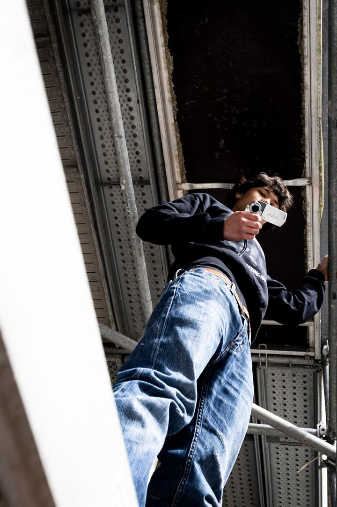

Manifesto · 1 min
Your phone shoots better than anything we sell.
That's the point.


The phone is perfect. That's the problem.

A phone merges a dozen frames and fixes everything before you see it.
These cameras take one frame and leave it alone. Highlights glow, shadows go muddy, reds run hot.
Phone, 2026CCD digicam, 2004
Frames per photo8 – 15, merged1
HighlightsRecoveredGone. Glowing.
NightTurned into dayStays night
Where it goesA cloud, foreverA 128 MB card you might lose
The archive, out in the world
01 / 09

